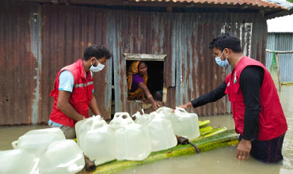
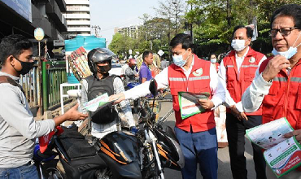

In Focus
- 
Monsoon Flood 2020
Heavy rainfall at the upstream region intimidating forecast of severe flood in swelling rivers namely Brahmaputra, Ganges, Meghna, Teesta, Dharla, Sarihowain, Jadukata, Someswari, Kangsha, Manu and Khowai potentially affecting 19 districts in the northern, central and north-eastern part of Bangladesh according to the FFWC.

CEA Fact Sheet 2020
In 2010, Community Engagement and Accountability (CEA) adopted as a cross cutting theme in BDRCS. We have accomplished a remarkable 10 years journey on CEA. In the crisis of COVID-19, CEA team has published a Fact Sheet focus on CEA integration strategy & collaboration approach with the Movement Partners.
- 
Coronavirus (COVID-19)
Since MARCH 2020, BDRCS has been preparing and responding to the epidemic of COVID-19 around the world, knowing that the virus is spreading to communities. BDRCS continue it works with Governments and partners to stop the transmission of the virus, reduce morbidity and mortality and minimize its effects in health.